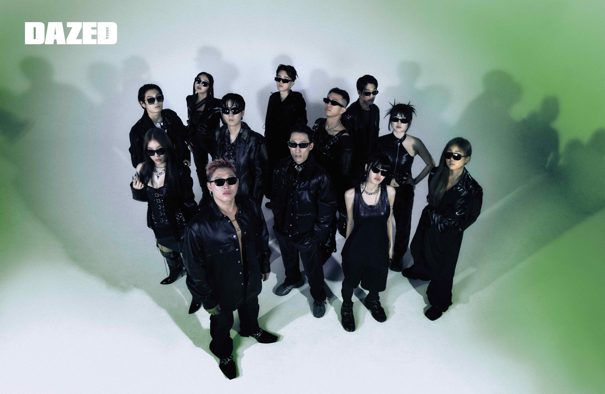

About AP Alchemy & Just Music
About AP Alchemy
스윙스가 설립한 레이블 Just Music, Indigo Music, WEDAPLUGG RECORDS, Mine Field, Sugar Beats가 홀딩스, 즉 하나의 거대한 회사로 합병되었고 AP Alchemy라는 이름이 붙여졌다.
About Just Music
스윙스가 설립한 대한민국의 힙합 레이블. 2009년 브랜뉴뮤직의 산하 레이블로 시작됐으며, 2014년 스윙스가 브랜드뮤직과의 계약이 종료되며 독립 레이블이 되었다
Just Music의 파급효과 앨범 커버